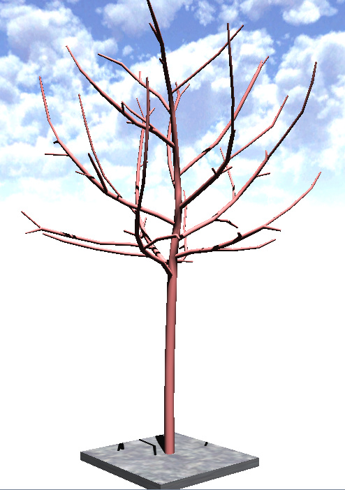
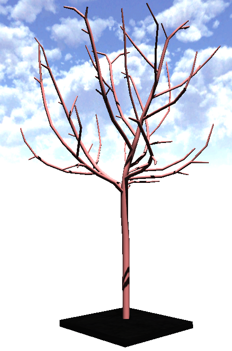
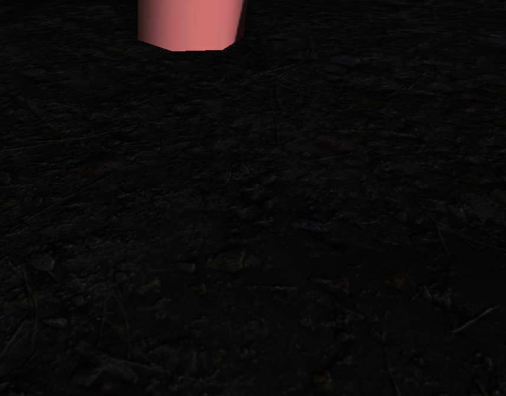

I tried to apply some pbr materials to the box under the tree but for some reason the material appears REALLY DARK, I used the material from here:
https://freepbr.com/materials/rocky-dirt/
,
And my xml file looks like this:
<material>
<technique name=“Techniques/PBR/PBRDiffNormal.xml” quality=“1” />
<!–<technique name=“Techniques/Diff.xml” quality=“0” />–>
<texture unit=“diffuse” name=“Textures/dirt/albedo.png” />
<texture unit=“normal” name=“Textures/dirt/normal.png” />
<texture unit=“roughness” name=“Textures/dirt/roughness.png” />
<parameter name=“Metallic” value=“0”/>
</material>
I used just the albedo and normal for now
btw it looks the same witchout the roughness
Here are some screenshots:
before:

I used default Stone.xml material
after:


As you can see these are really dark!
What could be the problem? Is it something with render path? I tried adjusting the intensity of the light but no big effect on my material when other non-PBR materials are white!
Thanks for help in advance.